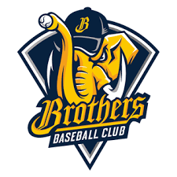

中華職棒
CPBL

戰績
上半季勝率
| 隊名 |
勝 |
敗 |
和 |
勝率 |
勝差 |
| 中信兄弟 |
37 |
23 |
0 |
0.617 |
- |
樂天桃猿 |
34 |
26 |
0 |
0.567 |
3.0 |
| 統一7-ELEVEn獅 |
26 |
34 |
0 |
0.433 |
11.0 |
富邦悍將 |
23 |
37 |
0 |
0.383 |
14.0 |
下半季勝率
| 隊名 |
勝 |
敗 |
和 |
勝率 |
勝差 |
| 統一7-ELEVEn獅 |
7 |
5 |
0 |
0.583 |
- |
| 樂天桃猿 |
7 |
6 |
0 |
0.538 |
0.5 |
| 中信兄弟 |
6 |
7 |
0 |
0.462 |
1.5 |
| 富邦悍將 |
5 |
7 |
0 |
0.417 |
2.0 |
全年勝率
| 隊名 |
勝 |
敗 |
和 |
勝率 |
勝差 |
| 中信兄弟 |
43 |
30 |
0 |
0.589 |
- |
| 樂天桃猿 |
41 |
32 |
0 |
0.562 |
2.0 |
| 統一7-ELEVEn獅 |
33 |
39 |
0 |
0.458 |
9.5 |
| 富邦悍將 |
28 |
44 |
0 |
0.389 |
14.5 |
介紹
彈力球

中信兄弟
隊名變更
- 兄弟飯店棒球隊（1984年～1989年）
- 兄弟象隊（1990年～2013年）
- 中信兄弟隊（2014年～）

統一7-ELEVEn獅
隊名變更
- 統一棒球隊（1989年）
- 統一獅隊（1990年～2007年）
- 統一7-ELEVEn獅隊（2008年～)

樂天桃猿
隊名變更
- 台北太陽隊
- 高屏雷公隊（1997年～2002年）
- 第一金剛隊（2003年）
- La New熊隊（2004年～2010年）
- Lamigo桃猿隊（2011年～2019年）
- 樂天桃猿隊（2020年～）

富邦悍將
隊名變更
- 俊國建設棒球隊（1989年～1992年）
- 俊國熊隊（1993年～1995年）
- 興農熊隊（1996年）
- 興農牛隊（1996年～2012年）
- 義大犀牛隊（2013年～2016年）
- 富邦悍將隊（2017年～）

中信兄弟
統一7-ELEVEn獅
樂天桃猿
富邦悍將